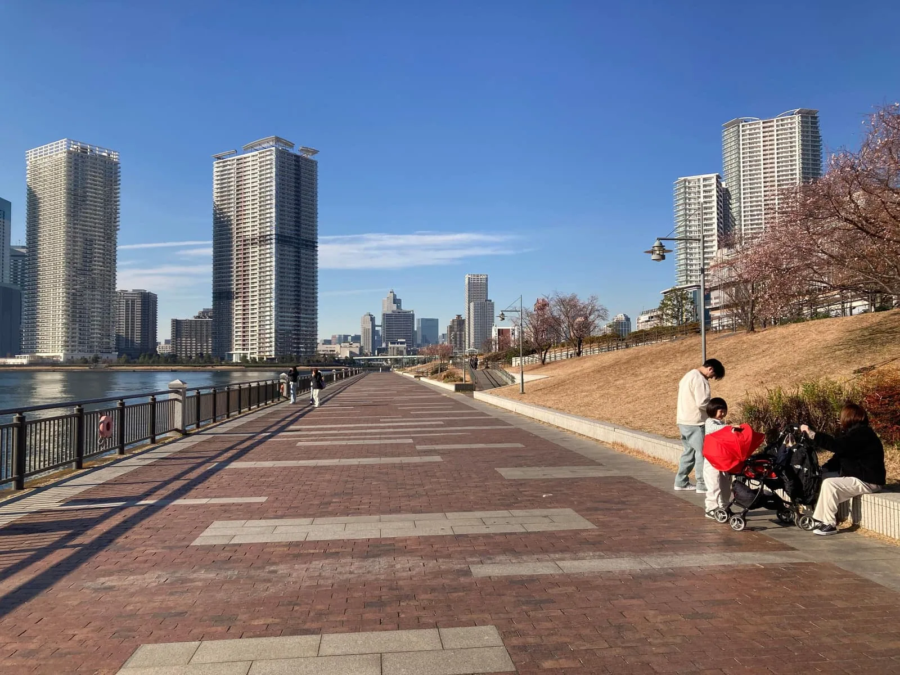

以中文協助外國客戶處理日本買房、自住、投資及契約流程。無論是找房、貸款或簽約問題，都歡迎找我聊聊！
📍 東京23區為主，周邊地區橫濱、神奈川、千葉等也可介紹哦！
從第一次聊到拿到鑰匙，一共 10 步、每一步都有我陪，全程中文。
專找理想的家，從看房到交屋
精選高投報物件，專業分析建議
銀行審查・貸款規劃，降低風險
合約・文件代辦，專業翻譯服務
檢查細節・安心交屋，全程協助
生活・就職資訊，在日更安心
看不懂日文圖面？上傳 JPG 圖片，馬上翻成中文整理重點！

每一次成交，都是一個家庭在日本的新開始。以下是客戶給周周的真實回饋。
不管自住還是投資，直接加 LINE 找周周聊聊，看到喜歡的物件也可以貼給我看。
從找房、看房、議價，到貸款、契約、簽約交屋及售後管理，日本買房大小事，周周全程以中文陪您處理。
非購屋客戶如有以下需求，可另外預約付費諮詢：
※ 購屋交易相關的翻譯及流程協助，將依仲介服務內容提供。※ 單純翻譯、求職或日本生活諮詢，屬於另外收費服務。
這些流程周周都會一步一步陪你確認，不用自己看日文資料看到頭痛。
剩下的九步，我陪你一起走。
專門寫給想在日本生活、想從租屋升級成買房的你。
專門寫給想在日本穩定收租的投資人。
最常被問到的問題，先在這裡解答。
周欣妤 ｜ 台灣人・東京第一線房仲
LINE ID：
掃描或長按加入 LINE
 ▶
▶